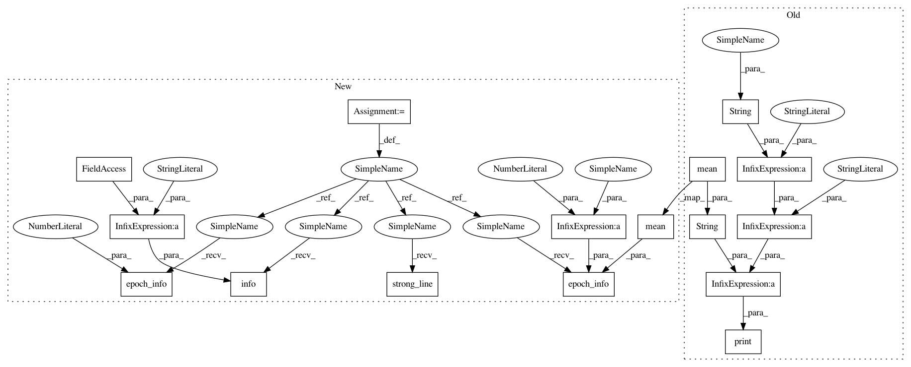

b8364d493b6145c31780573f3c4995a2967c2631,examples/ship_steering_bbo.py,,experiment,#Any#Any#Any#Any#Any#,27
Before Change
n_episodes_per_fit=ep_per_fit)
dataset_eval = core.evaluate(n_episodes=ep_per_fit)
J = compute_J(dataset_eval, gamma=mdp.info.gamma)
print("J at iteration " + str(i) + ": " + str(np.mean(J)))
if __name__ == "__main__":
After Change
def experiment(alg, params, n_epochs, fit_per_epoch, ep_per_fit):
np.random.seed()
logger = Logger(alg.__name__, results_dir=None)
logger.strong_line()
logger.info("Experiment Algorithm: " + alg.__name__)
// MDP
mdp = ShipSteering()
// Policy
high = [150, 150, np.pi]
low = [0, 0, -np.pi]
n_tiles = [5, 5, 6]
low = np.array(low, dtype=np.float)
high = np.array(high, dtype=np.float)
n_tilings = 1
tilings = Tiles.generate(n_tilings=n_tilings, n_tiles=n_tiles, low=low,
high=high)
phi = Features(tilings=tilings)
input_shape = (phi.size,)
approximator = Regressor(LinearApproximator, input_shape=input_shape,
output_shape=mdp.info.action_space.shape)
policy = DeterministicPolicy(approximator)
mu = np.zeros(policy.weights_size)
sigma = 4e-1 * np.ones(policy.weights_size)
distribution = GaussianDiagonalDistribution(mu, sigma)
// Agent
agent = alg(mdp.info, distribution, policy, features=phi, **params)
// Train
core = Core(agent, mdp)
dataset_eval = core.evaluate(n_episodes=ep_per_fit)
J = compute_J(dataset_eval, gamma=mdp.info.gamma)
logger.epoch_info(0, J=np.mean(J))
for i in range(n_epochs):
core.learn(n_episodes=fit_per_epoch * ep_per_fit,
n_episodes_per_fit=ep_per_fit)
dataset_eval = core.evaluate(n_episodes=ep_per_fit)
J = compute_J(dataset_eval, gamma=mdp.info.gamma)
logger.epoch_info(i+1, J=np.mean(J))
if __name__ == "__main__":
In pattern: SUPERPATTERN
Frequency: 3
Non-data size: 16
Instances
Project Name: AIRLab-POLIMI/mushroom
Commit Name: b8364d493b6145c31780573f3c4995a2967c2631
Time: 2021-01-08
Author: boris.ilpossente@hotmail.it
File Name: examples/ship_steering_bbo.py
Class Name:
Method Name: experiment
Project Name: AIRLab-POLIMI/mushroom
Commit Name: 8896f02f94da16afe5b3ea5330e4f99245b75d6b
Time: 2021-01-08
Author: boris.ilpossente@hotmail.it
File Name: examples/lqr_pg.py
Class Name:
Method Name: experiment
Project Name: AIRLab-POLIMI/mushroom
Commit Name: 60ebba7d23a946b55de9aaa34d08637e42e75d3b
Time: 2021-01-08
Author: boris.ilpossente@hotmail.it
File Name: examples/lqr_bbo.py
Class Name:
Method Name: experiment
Project Name: AIRLab-POLIMI/mushroom
Commit Name: b8364d493b6145c31780573f3c4995a2967c2631
Time: 2021-01-08
Author: boris.ilpossente@hotmail.it
File Name: examples/ship_steering_bbo.py
Class Name:
Method Name: experiment